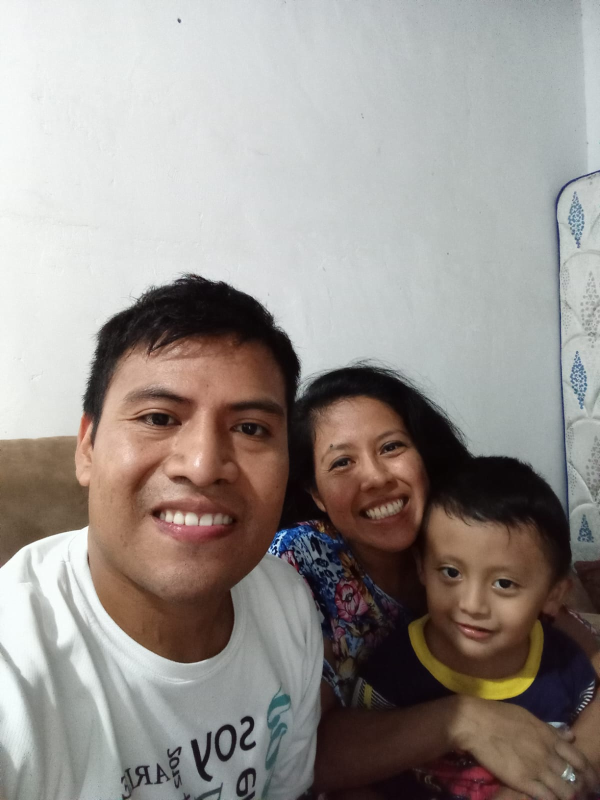
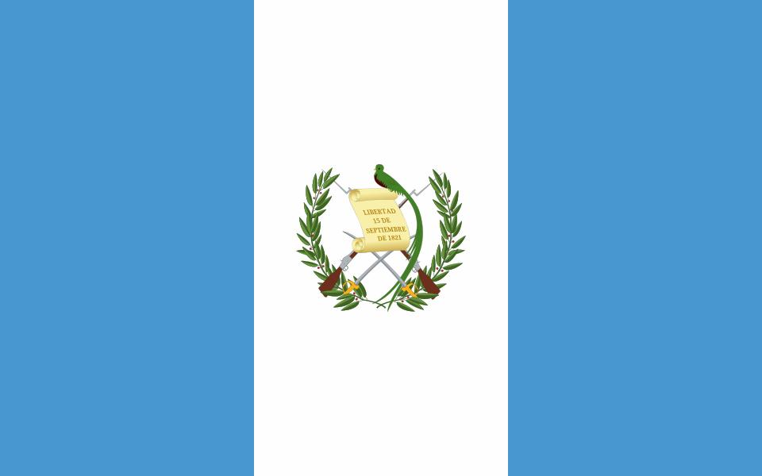

Henry Esteban
About Me
Hello! My name is Henry Esteban. I am from Guatemala. I live in Guatemala City. I have a son that is 4 years old and a wonderful wife. I am studying software development and learning programming fundamentals. I enjoy soccer, spending time with my family, and exploring Guatemala’s natural landscapes.


Guatemala City, Guatemala
Guatemala is a country in Central America known for its rich Mayan heritage, vibrant culture, and stunning natural landscapes. It is home to breathtaking volcanoes, beautiful lakes like Lake Atitlán, and historic cities such as Antigua. Guatemala City, the capital, is the nation’s cultural and economic hub.